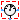

Interfaces
Extends from Modelica.Icons.InterfacesPackage (Icon for packages containing interfaces).
| Name | Description |
|---|---|
|  RelativeSensor | Obsolete model - use Modelica.Electrical.QuasiStatic.SinglePhase.Interfaces.RelativeSensorElementary instead |
Obsolete model - use Modelica.Electrical.QuasiStatic.SinglePhase.Interfaces.RelativeSensorElementary instead
The relative sensor partial model relies on the OnePort to measure the complex voltage or current. Additionally this model contains a proper icon and a definition of the angular velocity.
AbsoluteSensor, VoltageSensor, CurrentSensor, PowerSensor, Polyphase.Interfaces.AbsoluteSensor, Polyphase.Interfaces.RelativeSensorElementary
Extends from Modelica.Icons.ObsoleteModel (Icon for classes that are obsolete and will be removed in later versions), Modelica.Icons.RoundSensor (Icon representing a round measurement device), Modelica.Electrical.QuasiStatic.SinglePhase.Interfaces.OnePort (Two pins, current through).
| Name | Description |
|---|---|
| pin_p | Positive quasi-static single-phase pin |
| pin_n | Negative quasi-static single-phase pin |
| y |